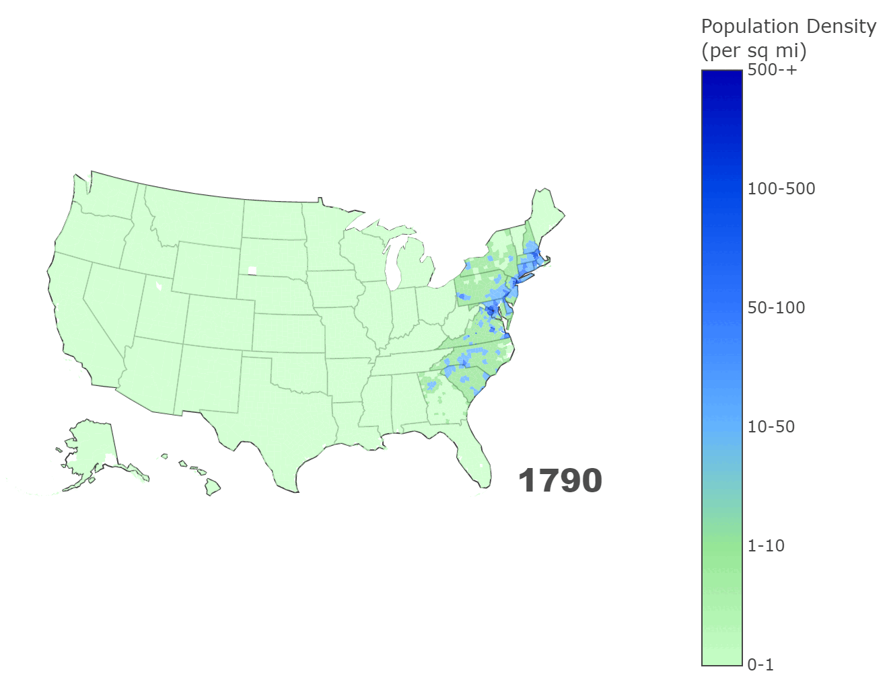

Two centuries of American population density
County-level density from 1790 to 2020, on a map you can move through decade by decade.
The map uses the Census Bureau's 2019 American Community Survey as a baseline and models earlier decades with exponential decay, so it is an estimate of the shape of settlement rather than a census of each county in each year. Drag the timeline to watch density spread west and concentrate in cities.

How it works
- Baseline population from the Census Bureau's ACS API; county shapes in an Albers equal-area projection with GeoPandas.
- Earlier decades modeled with exponential decay from the baseline.
- A county choropleth in Plotly, with hover detail and PNG export; geometry and data cached locally for speed.